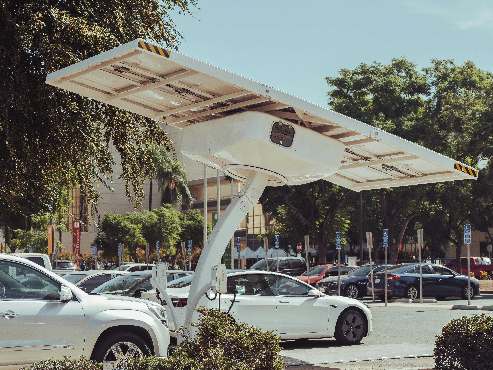

About our stories
At GoEV Newham, we believe the future is electric — and it starts right here, in our community.
What began as a simple idea — helping our neighbors find the best places to charge their EVs — grew into something much bigger. We saw the need for one clear, friendly space where everyone in Newham could learn about electric vehicles, find reliable charging points, and feel confident in making the switch.
We’re here to make EVs and plug-in hybrids (PHEVs) more accessible for everyday Londoners — whether you're just getting started or already cruising in electric. Our guides cover where to charge, why to go electric, and how to save money (and the planet) one journey at a time.
We’re proudly local. Every charging spot we list has been checked for real-world usefulness — not just what’s on paper. Our goal is to remove the stress and guesswork, so you can focus on what matters: getting around smoothly and sustainably.
🔌 Sign up for our newsletter to get the latest updates on new chargers, local EV news, and tips to power your ride.
